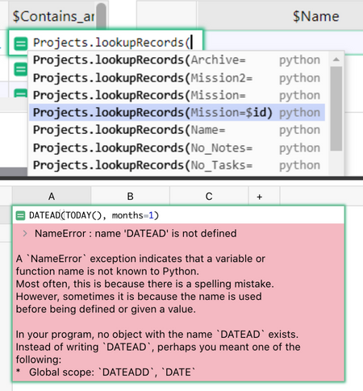

Warning
La traduction proposée ici a été générée automatiquement par le modèle d’intelligence artificielle GPT-4o. Il est probable qu’elle contienne des imperfections.
Mais la bonne nouvelle est que vous pouvez rejoindre la communauté de traduction pour améliorer le contenu fourni ici 👋.
Bulletin d’août 2022#
Bienvenue dans notre bulletin mensuel de mises à jour et de conseils pour les utilisateurs de Grist.
|

Espaces d’équipe gratuits#
Grist est plus puissant lorsqu’il est utilisé de manière collaborative. C’est pourquoi nous offrons désormais des espaces d’équipe gratuits pour toute votre équipe. Membres d’équipe illimités + documents illimités, pour des documents de moins de 5 000 lignes. Les espaces d’équipe gratuits sont également entièrement fonctionnels.
Quoi de neuf#
Styles conditionnels pour les lignes#
Vous pouvez désormais appliquer des styles conditionnels à une ligne entière. Dans le panneau de création, c’est sous l’onglet Table > Vue.

Aide aux formules améliorée + Autocomplétion#
Écrire et dépanner des formules est devenu un peu plus facile avec des suggestions d’autocomplétion et des messages d’erreur plus utiles. Par exemple, dans la capture d’écran ci-dessous, l’autocomplétion aide à écrire la formule courante mais difficile à retenir pour les recherches inversées, et l’erreur inclut une explication conviviale et des suggestions utiles pour la corriger.
Vous voulez en savoir plus sur les formules ? Il y a beaucoup d’informations sur les formules dans notre Centre d’aide, y compris cette fiche de triche des formules récemment ajoutée.

Ouvrir les données sources depuis la vue#
Vous pouvez ouvrir la table source d’une vue sans quitter la page. Dans le menu de la vue, cliquez sur “Afficher les données sources”. C’est particulièrement pratique pour les graphiques et les vues personnalisées.

Le panneau de gauche s’étend automatiquement#
Saviez-vous que vous pouvez réduire le menu de la page à gauche pour vous donner plus d’espace ? Désormais, le menu réduit s’étend automatiquement au survol, vous donnant plus de place sur les petits écrans ! 🎉

Masquer plusieurs colonnes#
Vous pouvez maintenant sélectionner plusieurs colonnes, faire un clic droit pour ouvrir le menu des colonnes, et masquer toutes les colonnes sélectionnées en un clic.
Contributions de la communauté et open source 🙏#
Grist est open source. Nous sommes reconnaissants à la communauté open source pour leurs contributions. Voici deux points forts récents.
Renommer rapidement les pages#
Pour renommer un nom de page, il vous suffit maintenant de cliquer. Merci, @LouisDelbosc !

Vues personnalisées : Ajouter une description de colonne dans le panneau de création#
Pour les développeurs de vues personnalisées : lorsque vous spécifiez les colonnes auxquelles votre vue doit accéder, vous pouvez désormais inclure une description pour aider à guider vos utilisateurs de vues, comme montré ici. Merci, @yohanboniface !

Open Source + Points forts des développeurs 👩💻#
-
grist-core omnibus. Paul a publié un grist-core omnibus pour faciliter l’auto-hébergement.
-
Grist en tant qu’application electron. L’utilisateur stan-donarise a emballé Grist en tant qu’application electron qui fonctionne sur Windows 7 ou plus tard. Comme c’est cool ! 😉
-
Générer des docx à partir d’un modèle. L’utilisateur stan-donarise ne s’est pas arrêté là. Il a intégré docxtemplater dans une vue personnalisée pour générer des rapports et des documents dans Grist.
Apprendre Grist#
Webinaire : Partager des données partielles avec des clés de lien#
En septembre, nous expliquerons comment utiliser l’une des fonctionnalités les plus cool et les moins explorées de Grist : les clés de lien. Apprenez à utiliser les clés de lien de Grist pour partager des données partielles, comme une seule ligne, avec des tiers.
Jeudi 22 septembre à 15h00 heure de l’Est des États-Unis.
Données relationnelles + Colonnes de référence#
En août, Natalie a plongé profondément dans les colonnes de référence et comment les utiliser dans les tableaux de bord et les formules.
Programme Sprouts#
Démarrez rapidement avec l’aide d’experts. Si vous savez ce dont vous avez besoin, mais avez besoin d’aide pour le construire, le programme Sprouts pourrait être pour vous.
Nouveaux Modèles#
Organisateur de réunions d’équipe#
Utilisez ce modèle pour stocker les comptes rendus de réunion d’équipe, les éléments d’action, la documentation de projet et plus encore.
Merci à l’utilisateur Grist Eduardo qui a partagé ce modèle avec nous. Il a été légèrement modifié pour répondre à des besoins plus généraux.
Vous voulez savoir comment cela a été construit ? Regardez Natalie le construire lors du webinaire d’août.

Carnet personnel#
Organisez vos projets, informations de contact et tâches dans ce carnet personnel.
Ce modèle a été créé par l’utilisateur Grist Julien. Il a été traduit et légèrement modifié pour répondre à des besoins plus généraux. Découvrez sa présentation dans le forum communautaire !
Si vous avez un modèle cool que vous aimeriez partager, nous serions ravis d’en entendre parler dans la vitrine communautaire !

Aidez-nous à faire connaître Grist ?#
Si vous souhaitez aider Grist à se développer, envisagez de laisser un avis sur les sites d’avis de produits. Voici une courte liste où votre avis pourrait avoir un grand impact. Merci ! 🙏
Nous sommes là pour vous soutenir#
Vous avez des questions, des commentaires ou besoin d’aide ? Recherchez dans notre Centre d’aide, regardez des tutoriels vidéo, partagez des idées dans notre Communauté, ou contactez-nous à support@getgrist.com.